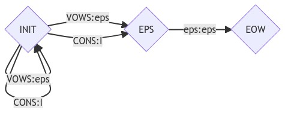
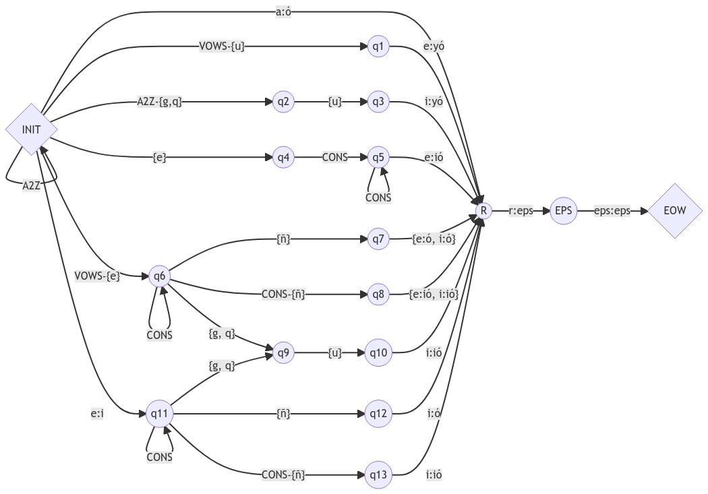

Reveal the code
import os
import pandas as pd
import random
import sys
random.seed(22)Jonas Reger
September 2022
In this notebook, a simple finite state transducer (FST) is implemented, which transduces the infinitive form of Spanish verbs to the preterite (past tense) form in the 3rd person singular (verb conjugation). A set of Spanish verbs are used to evaluate the FST’s accuracy. The source code of this notebook is also viewable here on GitHub.
The Spanish verbs data set contains the following features:
rule_id)rule_name)infinitive)conjugate)df = pd.read_csv('https://raw.githubusercontent.com/wjonasreger/data/main/spanish_verbs.csv')
df_sample = pd.DataFrame()
for c in df['rule_id'].unique():
df_temp = df.iloc[ list(df['rule_id'] == c), :]
df_sample = pd.concat([df_sample, df_temp.sample(1)], axis=0)
df_sample.set_index('rule_id', inplace=True)
df_sample.sort_index(inplace=True)
df_sample| rule_name | infinitive | conjugate | |
|---|---|---|---|
| rule_id | |||
| 1 | -Car : -Có | ovillar | ovilló |
| 2 | -Var : -Vó | piquetear | piqueteó |
| 3 | -Cer : -Ció | reprender | reprendió |
| 4 | -Cir : -Ció | unir | unió |
| 5 | -guir : -guió | extinguir | extinguió |
| 6 | -quir : -quió | derelinquir | derelinquió |
| 7 | -ñer : -ñó | retañer | retañó |
| 8 | -ñir : -ñó | fuñir | fuñó |
| 9 | -Ver : -Vyó | leer | leyó |
| 10 | -Vir : -Vyó | fluir | fluyó |
| 11 | -eCir : -iCió | trasferir | trasfirió |
| 12 | -eCCir : -iCCió | sentir | sintió |
| 13 | -eCCCir : -iCCCió | dehenchir | dehinchió |
| 14 | -eguir : -iguió | perseguir | persiguió |
| 15 | -eñir : -iñó | estreñir | estriñó |
Transition ClassEvery state is linked to another state by a transition. This class defines the following methods for transitions.
Initialization (i.e., __init__(self, state_in, string_in, string_out, state_out)): Saves the strings and states for the transition.
Equivalence (i.e., equals(self, t)): Compares two transition objects for equivalence.
class Transition:
def __init__(self, state_in, string_in, string_out, state_out):
self.state_in = state_in
self.string_in = string_in
self.state_out = state_out
self.string_out = string_out
def equals(self, t):
if self.state_in == t.state_in \
and self.string_in == t.string_in \
and self.state_out == t.state_out \
and self.string_out == t.string_out:
return True
else:
return FalseState ClassEach state of the transducer is defined by this class. Here are the methods as shown below.
__init__(id, is_final, FST)): Adds state features.addTransition(self, string_in, string_out, state_out)): Creates a new transition and checks if it already exists. New transitions are added to a transition dictionary, transitions.parseInputFromStartState(self, string_in, debug=False)): Generates full text parsing and acceptance of the parse.parseInput(self, string_in, debug=False)): Parse the string input to support parsing the entire word. Two cases are considered, an empty suffix and a non-empty suffix.printState(self)): Prints the state attributes.class State:
def __init__(self, id, is_final, FST):
self.id = id # integer id of the state
self.is_final = is_final # indicator that this is the final state
self.transitions = dict() # map string_in to a set of all possible transitions
self.FST = FST
def addTransition(self, string_in, string_out, state_out):
# create new transition
new_transition = Transition(self, string_in, string_out, state_out)
if string_in in self.transitions:
for t in self.transitions[string_in]:
if t.equals(new_transition):
return
self.transitions[string_in].add(new_transition)
else:
self.transitions[string_in] = set([])
self.transitions[string_in].add(new_transition)
def parseInputFromStartState(self, string_in, debug=False):
parse_tuple = ("", self.id)
parses = []
(accept, string_parses) = self.parseInput(string_in, debug)
if accept:
for p in string_parses:
complete_parse = [parse_tuple]
complete_parse.extend(p)
parses.append(complete_parse)
return (accept, parses)
def parseInput(self, string_in, debug=False):
parses = []
if debug:
print("parseInput: state: ", self.id, " parsing: " , string_in)
# case 1: no suffix
if string_in == "":
epsilon_parses = []
epsilon_accepted = False
# try all epsilon transitions
if "" in self.transitions:
trans_set = self.transitions[""]
for t in trans_set:
string_out = t.string_out
to_state_id = t.state_out
to_state = self.FST.all_states[to_state_id]
parse_tuple = (string_out, to_state_id)
(suffix_accepted, suffix_parses) = to_state.parseInput(string_in)
if suffix_accepted:
epsilon_accepted = True
if suffix_parses == []: # accepts
parse_s = [parse_tuple]
epsilon_parses.append(parse_s)
else:
for s in suffix_parses:
parse_s = [parse_tuple]
parse_s.extend(s)
epsilon_parses.append(parse_s)
# if epsilon is accepted, add all its parses
if epsilon_accepted:
parses.extend(epsilon_parses)
# if this is a final state, add an empty parse
if self.is_final or parses != []:
if debug:
print("Accepted in state ", self.id)
return (True, parses)
else:
if debug:
print("Rejected in state ", self.id)
return (False, None)
# case 2: non-empty suffix - there needs to be one suffix that parses
has_accepted_suffix = False;
for i in range(0,len(string_in)+1):
prefix = string_in[0:i]
suffix = string_in[i:len(string_in)]
if debug:
print("\t prefix: \'", prefix, "\' I=", i)
if prefix in self.transitions:
if debug:
print("\t prefix: ", prefix, "suffix: ", suffix, "I=", i)
trans_set = self.transitions[prefix]
for t in trans_set:
string_out = t.string_out
to_state_id = t.state_out
to_state = self.FST.all_states[to_state_id]
parse_tuple = (string_out, to_state_id)
(suffix_accepted, suffix_parses) = to_state.parseInput(suffix)
if suffix_accepted:
has_accepted_suffix = True
if suffix_parses == []:
parse_s = [parse_tuple]
parses.append(parse_s)
this_prefix_parses = True
for s in suffix_parses:
parse_s = [parse_tuple]
parse_s.extend(s)
parses.append(parse_s)
if has_accepted_suffix:
return (True, parses)
else:
return (False, None)
def printState(self):
if self.is_final:
FINAL = "FINAL"
else: FINAL = ""
print("State", self.id, FINAL)
for string_in in self.transitions:
trans_list = self.transitions[string_in]
for t in trans_list:
print("\t", string_in, ":", t.string_out, " => ", t.state_out)FST ClassHere, the FST class is defined with methods to conveniently construct an FST model.
Initialization (i.e., __init__(self, init_state_name="INIT")): Initializes an FST object with an initial (non-accepting) state named init_state_name)
Add a state (i.e., addState(self, name, is_final=False)): Adds a state name to the FST. A state is not an accepting state by default.
Add a transition (i.e., addTransition(self, state_in_name, string_in, string_out, state_out_name)): Add a transition from state state_in_name to state state_out_name, where both states already exist in the FST. The FST can traverse this transition after reading string_in, and outputs string_out when it does so. Essentially, this maps an input string string_in to an output string string_out.
Add a self transition (i.e., addSelfTransition(self, state_in_name, string_in, state_out_name)): Maps an input string to itself, between the input and output states.
Add an epsilon transition (i.e., addEpsilonTransition(self, state_in_name, state_out_name)): Maps an empty string to itself, between the input and output states.
Add a set transition (i.e., addSetTransition(self, state_in_name, string_in_set, state_out_name)): Maps every element in an input set to itself, between the input and output states.
Add a set to string transition (i.e., addSetToStringTransition(self, state_in_name, string_in_set, string_out, state_out_name)): Maps every element in an input set to an output string, between the input and output states.
Add a set to epsilon transition (i.e., addSetToEpsilonTransition(self, state_in_name, string_in_set, state_out_name)): Maps every element in an input set to an empty string, between the input and output states.
Add a dictionary transition (i.e., addDictTransition(self, state_in_name, string_in_dict, state_out_name)): Maps every key to its value in an input dictionary, between the input and output states.
Parse input (i.e., parseInput(self, string_in, show_states=False, debug=False)): Parses a single string input.
Parse input lists (i.e., parseInputList(self, verb_list, show_states=False, debug=False)): Parse all input strings.
Print the FST (i.e., printFST(self)): Prints FST details.
class FST:
def __init__(self, init_state_name="INIT"):
self.n_states = 0
self.init_state = State(init_state_name, False, self)
self.all_states = dict()
self.all_states[init_state_name] = self.init_state
def addState(self, name, is_final=False):
if name in self.all_states:
print("ERROR addState: state", name, "exists already")
sys.exit()
else:
new_state = State(name, is_final, self)
self.all_states[name] = new_state
def addTransition(self, state_in_name, string_in, string_out, state_out_name):
if (len(string_in) > 1):
print("ERROR: addTransition: input string ", string_in, " is longer than one character")
sys.exit()
if state_in_name not in self.all_states:
print("ERROR: addTransition: state ", state_in_name, " does not exist")
sys.exit()
if state_out_name not in self.all_states:
print("ERROR: addTransition: state ", state_out_name, " does not exist")
sys.exit()
state_in = self.all_states[state_in_name]
state_in.addTransition(string_in, string_out, state_out_name)
# map string to itself
def addSelfTransition(self, state_in_name, string_in, state_out_name):
if state_in_name not in self.all_states:
print("ERROR: addSetTransition: state ", state_in_name, " does not exist")
sys.exit()
if state_out_name not in self.all_states:
print("ERROR: addSetTransition: state ", state_out_name, " does not exist")
sys.exit()
self.addTransition(state_in_name, string_in, string_in, state_out_name)
# epsilon:epsilon
def addEpsilonTransition(self, state_in_name, state_out_name):
if state_in_name not in self.all_states:
print("ERROR: addEpsilonTransition: state ", state_in_name, " does not exist")
sys.exit()
if state_out_name not in self.all_states:
print("ERROR: addEpsilonTransition: state ", state_out_name, " does not exist")
sys.exit()
if state_in_name == state_out_name:
print("ERROR: epsilon loop")
sys.exit()
state_in = self.all_states[state_in_name]
state_in.addTransition("", "", state_out_name)
# map every element in string_in_set to itself
def addSetTransition(self, state_in_name, string_in_set, state_out_name):
if state_in_name not in self.all_states:
print("ERROR: addSetTransition: state ", state_in_name, " does not exist")
sys.exit()
if state_out_name not in self.all_states:
print("ERROR: addSetTransition: state ", state_out_name, " does not exist")
sys.exit()
for s in string_in_set:
self.addTransition(state_in_name, s, s, state_out_name)
# map every element in string_in_set to string_out
def addSetToStringTransition(self, state_in_name, string_in_set, string_out, state_out_name):
if state_in_name not in self.all_states:
print("ERROR: addSetDummyTransition: state ", state_in_name, " does not exist")
sys.exit()
if state_out_name not in self.all_states:
print("ERROR: addSetDummyTransition: state ", state_out_name, " does not exist")
sys.exit()
for s in string_in_set:
self.addTransition(state_in_name, s, string_out, state_out_name)
# map every element in string_in_set to string_out=""
def addSetToEpsilonTransition(self, state_in_name, string_in_set, state_out_name):
if state_in_name not in self.all_states:
print("ERROR: addSetEpsilonTransition: state ", state_in_name, " does not exist")
sys.exit()
if state_out_name not in self.all_states:
print("ERROR: addSetEpsionTransition: state ", state_out_name, " does not exist")
sys.exit()
for s in string_in_set:
self.addTransition(state_in_name, s, "", state_out_name)
# map every key element in string_in_dict to its value
def addDictTransition(self, state_in_name, string_in_dict, state_out_name):
if state_in_name not in self.all_states:
print("ERROR: addSetTransition: state ", state_in_name, " does not exist")
sys.exit()
if state_out_name not in self.all_states:
print("ERROR: addSetTransition: state ", state_out_name, " does not exist")
sys.exit()
for key, value in string_in_dict.items():
self.addTransition(state_in_name, key, value, state_out_name)
def parseInput(self, string_in, show_states=False, debug=False):
string_in = string_in.rstrip('\n')
(can_parse, all_parses) = self.init_state.parseInputFromStartState(string_in, debug)
all_parses_as_string = ""
if can_parse:
for parse in all_parses:
for tuple in parse:
string_out, state_out = tuple
all_parses_as_string += string_out
if show_states:
all_parses_as_string += "\t States: "
i = 0
for tuple in parse:
i += 1
string_out, state_out = tuple
all_parses_as_string += state_out
if i < len(parse):
all_parses_as_string += " => "
all_parses_as_string += "; "
return True, all_parses_as_string
else:
return False, "FAIL"
def parseInputList(self, verb_list, show_states=False, debug=False):
n_parses = 0
total_strings = 0
res = []
for verb in verb_list:
total_strings += 1
can_parse, parse = self.parseInput(verb, show_states, debug)
res += [parse]
if can_parse:
n_parses += 1
fraction = n_parses / total_strings
print(n_parses, "/", total_strings, "=", str(fraction * 100)+'%', "of examples parsed")
return res
def printFST(self):
print("Printing FST", str(self))
for state_id in self.all_states:
state = self.all_states[state_id]
state.printState()Here is an FST structure template and function to build FST models.
'''
structure = {
'_init': 'INIT', # the initial state
'_accept': 'EOW', # an accepting state
'_states': ['EPS'],
'_transitions': {
'_regular':
[{'state_in_name':'', 'string_in':'', 'string_out':'', 'state_out_name':''}],
'_self':
[{'state_in_name':'', 'string_in':'', 'state_out_name':''}],
'_epsilon':
[{'state_in_name':'', 'state_out_name':''}],
'_set':
[{'state_in_name':'', 'string_in_set':'', 'state_out_name':''}],
'_set2string':
[{'state_in_name':'', 'string_in_set':'', 'string_out':'', 'state_out_name':''}]],
'_set2epsilon':
[{'state_in_name':'', 'string_in_set':'', 'state_out_name':''}],
'_dict':
[{'state_in_name':'', 'string_in_dict':'', 'state_out_name':''}]
}
}
'''
def buildFST(structure):
# instantiate FST
f = FST(init_state_name=structure['_init'])
# add accepting state
f.addState(name=structure['_accept'], is_final=True)
# add all states
for s in structure['_states']:
f.addState(name=s)
# add regular transitions
if structure['_transitions']['_regular'] is not None:
for t in structure['_transitions']['_regular']:
f.addTransition(t['state_in_name'], t['string_in'], t['string_out'], t['state_out_name'])
# add self transitions
if structure['_transitions']['_self'] is not None:
for t in structure['_transitions']['_self']:
f.addSelfTransition(t['state_in_name'], t['string_in'], t['state_out_name'])
# add epsilon transitions
if structure['_transitions']['_epsilon'] is not None:
for t in structure['_transitions']['_epsilon']:
f.addEpsilonTransition(t['state_in_name'], t['state_out_name'])
# add set transitions
if structure['_transitions']['_set'] is not None:
for t in structure['_transitions']['_set']:
f.addSetTransition(t['state_in_name'], t['string_in_set'], t['state_out_name'])
# add set to string transitions
if structure['_transitions']['_set2string'] is not None:
for t in structure['_transitions']['_set2string']:
f.addSetToStringTransition(t['state_in_name'], t['string_in_set'], t['string_out'], t['state_out_name'])
# add set to epsilon transitions
if structure['_transitions']['_set2epsilon'] is not None:
for t in structure['_transitions']['_set2epsilon']:
f.addSetToEpsilonTransition(t['state_in_name'], t['string_in_set'], t['state_out_name'])
# add dictionary transitions
if structure['_transitions']['_dict'] is not None:
for t in structure['_transitions']['_dict']:
f.addDictTransition(t['state_in_name'], t['string_in_dict'], t['state_out_name'])
return fHere is a simple FST that maps each consonant to I and each vowel to an empty string. All words with no unknown characters will be accepted by the FST. First, consider the graph for this FST, then the code. This FST is essentially a tally system to count how many consonants are in a word.

Here is the FST structure as a dictionary. This can be processed by the buildFST(structure) function to build the FST model given a structure.
A2Z = set('abcdefghijklmnopqrstuvwxyz')
VOWS = set('aeiou')
CONS = A2Z-VOWS
cons_count_structure = {
'_init': 'INIT', # the initial state
'_accept': 'EOW', # an accepting state
'_states': ['EPS'],
'_transitions': {
'_regular': None,
'_self': None,
'_epsilon': [
# If see empty string, then end of word
{'state_in_name':'EPS', 'state_out_name':'EOW'}
],
'_set': None,
'_set2string': [
# # maps consonants to 'I'
{'state_in_name':'INIT', 'string_in_set':CONS, 'string_out':'I', 'state_out_name':'INIT'},
{'state_in_name':'INIT', 'string_in_set':CONS, 'string_out':'I', 'state_out_name':'EPS'}
],
'_set2epsilon': [
# maps vowels to ''
{'state_in_name':'INIT', 'string_in_set':VOWS, 'state_out_name':'INIT'},
{'state_in_name':'INIT', 'string_in_set':VOWS, 'state_out_name':'EPS'}
],
'_dict': None
}
}parseInput: state: INIT parsing: soccer
prefix: ' ' I= 0
prefix: ' s ' I= 1
prefix: s suffix: occer I= 1
prefix: ' so ' I= 2
prefix: ' soc ' I= 3
prefix: ' socc ' I= 4
prefix: ' socce ' I= 5
prefix: ' soccer ' I= 6
1 / 1 = 100.0% of examples parsed# input word list
sentence = ['the', 'quick', 'brown', 'fox', 'jumps', 'over', 'the', 'lazy', 'dog']
# parse results and the state paths
fst_parses = cons_count_fst.parseInputList(sentence, show_states=True, debug=False)
df_parses = pd.DataFrame({'words':sentence, 'parsings':fst_parses})
df_parses['results'] = df_parses.parsings.apply(lambda x: x.split('\t ')[0])
df_parses['states'] = df_parses.parsings.apply(lambda x: x.split('\t ')[1])
df_parses.drop(['states', 'parsings'], axis=1, inplace=True)
df_parses.set_index('words', inplace=True)
df_parses.T9 / 9 = 100.0% of examples parsed| words | the | quick | brown | fox | jumps | over | the | lazy | dog |
|---|---|---|---|---|---|---|---|---|---|
| results | II | III | IIII | II | IIII | II | II | III | II |
This section will show a rudimentary implementation for transducing verbs to their past tense forms \(-\) thus, as it is a simple FST, it is only compatible with regular verbs. Further down, an FST is built to handle conjugations for all verbs in the imported data set.
The FST will parse a string and analyze it after reading the last character. If the string is accepted, then the FST will return the transduced form; if it is not accepted, then the FST will fail the string. The FST is non-deterministic, but each accepted string will only have one analysis or path. If an accepted string had more than one path in the FST, then all paths would be returned and the conjugation would be incorrect. For instance, hablar ==> hablóhablóhablóhabló. An input string will be accepted if it reaches a final state after the FST reads its last character.
Here are the specifications for producing the 3rd person singular of the Spanish preterite tense from the verb infinitive. An assumption for the transducer is all Spanish infinitives consists of a stem and ending, which is always -ar, -er or -ir. For instance, the stem of the verb hablar is habl- and the ending is -ar. The FST handles conjugations of regular verbs and a few exception cases.
The conjugation rules are shown more specifically in the table below. Note that C=Consonant, S=String, and V=Vowel.
| Rule ID | Rule Name | Ending | Infinitive | Conjugation | Example |
|---|---|---|---|---|---|
| 01 | Regular | -Car | stem + ar | stem + ó | hablar ==> habló |
| 02 | Regular | -Var | stem + ar | stem + ó | pasear ==> paseó |
| 03 | Regular | -Cer | stem + er | stem + ió | comer ==> comió |
| 04 | Regular | -Cir | stem + ir | stem + ió | abrir ==> abrió |
| 05 | Regular | -guir | stem + guir | stem + guió | distinguir ==> distinguió |
| 06 | Regular | -quir | stem + quir | stem + quió | delinquir ==> delinquió |
| 07 | ñ-ending Stems | -ñer | stem(S, ñ) + er | stem(S, ñ) + ó | tañer ==> tañó |
| 08 | ñ-ending Stems | -ñir | stem(S, ñ) + ir | stem(S, ñ) + ó | gruñir ==> gruñó |
| 09 | Vowel-ending Stems | -Ver | stem(S, V) + er | stem(S, V) + yó | leer ==> leyó |
| 10 | Vowel-ending Stems | -Vir | stem(S, V) + ir | stem(S, V) + yó | construir ==> construyó |
| 11 | Vowel Raising | -eCir | stem(S, e, C) + ir | stem(S, i, C) + ió | pedir ==> pidió |
| 12 | Vowel Raising | -eCCir | stem(S, e, CC) + ir | stem(S, i, CC) + ió | sentir ==> sintió |
| 13 | Vowel Raising | -eCCCir | stem(S, e, CCC) + ir | stem(S, i, CCC) + ió | henchir ==> hinchió |
| 14 | Vowel Raising | -eguir | stem + eguir | stem + iguió | seguir ==> siguió |
| 15 | Vowel Raising | -eñir | stem(S, e, ñ) + ir | stem(S, i, ñ) + ó | heñir ==> hiñó |
This graph outlines the design of the FST for this Spanish verb conjugation task.

Here is the code to implement this Spanish verb conjugation FST model using the structure spanish_structure, and FST build function buildFST(structure).
A2Z = set('abcçdefghijklmnopqrstuvwxyzáéíóúñü')
VOWS = set('aeiouáéíóúü')
CONS = A2Z-VOWS
spanish_structure = {
'_init': 'INIT', # the initial state
'_accept': 'EOW', # an accepting state
'_states': ['EPS', 'R', 'q1', 'q2', 'q3', 'q4', 'q5', 'q6', 'q7', 'q8', 'q9', 'q10', 'q11', 'q12', 'q13'],
'_transitions': {
'_regular': [
# Transition on final r in infinitive - replace with empty string
{'state_in_name':'R', 'string_in':'r', 'string_out':'', 'state_out_name':'EPS'},
# -Var verbs
{'state_in_name':'INIT', 'string_in':'a', 'string_out':'ó', 'state_out_name':'R'},
# -Ver verbs
{'state_in_name':'q1', 'string_in':'e', 'string_out':'yó', 'state_out_name':'R'},
# -Vir verbs
{'state_in_name':'q3', 'string_in':'i', 'string_out':'yó', 'state_out_name':'R'},
# -Cer verbs (includes ñ)
{'state_in_name':'q5', 'string_in':'e', 'string_out':'ió', 'state_out_name':'R'},
# -guir, -quir verbs (also -eguir verbs from state q11)
{'state_in_name':'q10', 'string_in':'i', 'string_out':'ió', 'state_out_name':'R'},
# vowel raising 'e' to 'i'
{'state_in_name':'INIT', 'string_in':'e', 'string_out':'i', 'state_out_name':'q11'},
# -eñir verbs
{'state_in_name':'q12', 'string_in':'i', 'string_out':'ó', 'state_out_name':'R'},
# -eCir, -eCCir, -eCCCir verbs
{'state_in_name':'q13', 'string_in':'i', 'string_out':'ió', 'state_out_name':'R'}
],
'_self': [
# e.g., compare: construir ==> construyó, delinguir ==> delinquió
{'state_in_name':'q2', 'string_in':'u', 'state_out_name':'q3'},
# e.g., prevents: trascender ==> trascindió (correct: trascendió)
{'state_in_name':'INIT', 'string_in':'e', 'state_out_name':'q4'},
# e.g., prevents: tañer ==> tañió (correct: tañó)
{'state_in_name':'q6', 'string_in':'ñ', 'state_out_name':'q7'},
# e.g., prevents: seguir ==> siguyó (correct: siguió)
{'state_in_name':'q9', 'string_in':'u', 'state_out_name':'q10'},
# e.g., prevents: heñir ==> hiñió (correct: hiñó)
{'state_in_name':'q11', 'string_in':'ñ', 'state_out_name':'q12'}
],
'_epsilon': [
# If see empty string, then end of word
{'state_in_name':'EPS', 'state_out_name':'EOW'}
],
'_set': [
# self-loop on all letters to transition through stem
{'state_in_name':'INIT', 'string_in_set':A2Z, 'state_out_name':'INIT'}, # u?
# check for stems ending with vowel for -er verbs. e.g., leer ==> leyó
{'state_in_name':'INIT', 'string_in_set':VOWS-{'u'}, 'state_out_name':'q1'}, # u?
# check for stems ending with vowel for -ir verbs (excluding -guir, -quir verbs)
# e.g., construir ==> construyó
{'state_in_name':'INIT', 'string_in_set':A2Z-{'g', 'q'}, 'state_out_name':'q2'},
# requires consonant between 'e' in stem and -er ending (no vowels in between).
# e.g., compare: temer ==> temió, leer ==> leyó
# prevents: leer ==> leió (correct: leyó)
{'state_in_name':'q4', 'string_in_set':CONS, 'state_out_name':'q5'},
# allows additional consonants between 'e' in stem and -er ending (no vowels in between).
# e.g., converger ==> convergió
{'state_in_name':'q5', 'string_in_set':CONS, 'state_out_name':'q5'},
# ignores verbs with 'e' as last vowel in stem
{'state_in_name':'INIT', 'string_in_set':VOWS-{'e'}, 'state_out_name':'q6'},
# enforces previous transition such that the vowel is truly the last in the stem
# i.e., terminating paths if vowel reappears before verb ending
{'state_in_name':'q6', 'string_in_set':CONS, 'state_out_name':'q6'},
# ignores verbs with stems that end with 'ñ'
# prevents: tañer ==> tañió (correct: tañó)
{'state_in_name':'q6', 'string_in_set':CONS-{'ñ'}, 'state_out_name':'q8'},
# accepting potential -guir, -quir verbs
{'state_in_name':'q6', 'string_in_set':{'g', 'q'}, 'state_out_name':'q9'},
# enforces that 'e' is last vowel of potential -ir verb for vowel raising
{'state_in_name':'q11', 'string_in_set':CONS, 'state_out_name':'q11'},
# ignores verbs with stems that end with 'ñ'
# prevents: heñir ==> hiñió (correct: hiñó)
{'state_in_name':'q11', 'string_in_set':CONS-{'ñ'}, 'state_out_name':'q13'},
# accepting potential -eguir verbs
{'state_in_name':'q11', 'string_in_set':{'g', 'q'}, 'state_out_name':'q9'}
],
'_set2string': None,
'_set2epsilon': None,
'_dict': [
# -ñer and -ñir verbs
{'state_in_name':'q7', 'string_in_dict':{'e':'ó', 'i':'ó'}, 'state_out_name':'R'},
# -Cer and -Cir verbs (excludes ñ)
{'state_in_name':'q8', 'string_in_dict':{'e':'ió', 'i':'ió'}, 'state_out_name':'R'}
]
}
}spanish_fst = buildFST(spanish_structure)
fst_parses = spanish_fst.parseInputList([verb for verb in df.infinitive])
df_parses = pd.concat([df, pd.DataFrame(fst_parses)], axis=1)
df_parses
df_parses.columns = list(df.columns) + ['parse']
df_parses['correct'] = df_parses.conjugate == df_parses.parse
df_parses.sample(5)3295 / 3295 = 100.0% of examples parsed| rule_id | rule_name | infinitive | conjugate | parse | correct | |
|---|---|---|---|---|---|---|
| 1663 | 1 | -Car : -Có | exhortar | exhortó | exhortó | True |
| 1697 | 1 | -Car : -Có | externar | externó | externó | True |
| 595 | 2 | -Var : -Vó | carnavalear | carnavaleó | carnavaleó | True |
| 2856 | 2 | -Var : -Vó | ripiar | ripió | ripió | True |
| 544 | 2 | -Var : -Vó | cablegrafiar | cablegrafió | cablegrafió | True |
The verb data set is used to evaluate the FST according to the conjugation rules specified in the previous section. As can be seen, the FST performs perfectly on this conjugation task over all verbs in the data (i.e., 3295 verbs).
print("Overall Accuracy:", str(df_parses.correct.mean() * 100) + '%')
df_results = df_parses[['rule_id', 'rule_name', 'correct']].groupby(['rule_id', 'rule_name']).agg(['sum', 'count', 'mean'])
df_results.columns = ['correct', 'total', 'accuracy']
df_results.accuracy = df_results.accuracy.apply(lambda x: str(x * 100) + '%')
df_results.sort_index(inplace=True)
df_results.reset_index(inplace=True)
df_results.set_index('rule_id', inplace=True)
df_resultsOverall Accuracy: 100.0%| rule_name | correct | total | accuracy | |
|---|---|---|---|---|
| rule_id | ||||
| 1 | -Car : -Có | 2371 | 2371 | 100.0% |
| 2 | -Var : -Vó | 559 | 559 | 100.0% |
| 3 | -Cer : -Ció | 150 | 150 | 100.0% |
| 4 | -Cir : -Ció | 130 | 130 | 100.0% |
| 5 | -guir : -guió | 2 | 2 | 100.0% |
| 6 | -quir : -quió | 3 | 3 | 100.0% |
| 7 | -ñer : -ñó | 2 | 2 | 100.0% |
| 8 | -ñir : -ñó | 6 | 6 | 100.0% |
| 9 | -Ver : -Vyó | 8 | 8 | 100.0% |
| 10 | -Vir : -Vyó | 20 | 20 | 100.0% |
| 11 | -eCir : -iCió | 20 | 20 | 100.0% |
| 12 | -eCCir : -iCCió | 13 | 13 | 100.0% |
| 13 | -eCCCir : -iCCCió | 2 | 2 | 100.0% |
| 14 | -eguir : -iguió | 4 | 4 | 100.0% |
| 15 | -eñir : -iñó | 5 | 5 | 100.0% |
| rule_name | infinitive | conjugate | parse | correct | |
|---|---|---|---|---|---|
| rule_id | |||||
| 1 | -Car : -Có | vacilar | vaciló | vaciló | True |
| 2 | -Var : -Vó | boletear | boleteó | boleteó | True |
| 3 | -Cer : -Ció | pretender | pretendió | pretendió | True |
| 4 | -Cir : -Ció | redimir | redimió | redimió | True |
| 5 | -guir : -guió | extinguir | extinguió | extinguió | True |
| 6 | -quir : -quió | chasquir | chasquió | chasquió | True |
| 7 | -ñer : -ñó | tañer | tañó | tañó | True |
| 8 | -ñir : -ñó | fuñir | fuñó | fuñó | True |
| 9 | -Ver : -Vyó | caer | cayó | cayó | True |
| 10 | -Vir : -Vyó | instituir | instituyó | instituyó | True |
| 11 | -eCir : -iCió | proferir | profirió | profirió | True |
| 12 | -eCCir : -iCCió | servir | sirvió | sirvió | True |
| 13 | -eCCCir : -iCCCió | dehenchir | dehinchió | dehinchió | True |
| 14 | -eguir : -iguió | conseguir | consiguió | consiguió | True |
| 15 | -eñir : -iñó | estreñir | estriñó | estriñó | True |
While the FST works perfectly over all verbs in the data set (most verbs in the Spanish language), it is important to note that there are verbs it will not work on. Here is a list of some exceptions that the FST doesn’t account for.
New states and transitions can be added the FST model in order to handle these additional rules for 3rd person singular of the Spanish preterite tense from the verb infinitive. Additionally, this FST model could be further expanded to handle conjugations to different pronouns, plurality, and tenses. The model can also be expanded even further to handle different directions (e.g., transduce infinitive to 3rd person singular preterite, then 2nd person singular present).